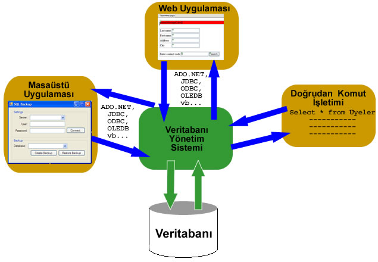

Veritabanına Genel Bakış
Bu makale dizisi boyunca bir programcının (veya adayının) veritabanı ile ilgili temel seviyede bilmesi gereken konuları birer birer anlatmaya çalışacağım.
Bu makalelerin bütün iddiası yeni başlayanlara konu ile ilgili saf Türkçe bilgi sunmak, internetteki Türkçe kaynak eksikliğini azıcık da olsa gidermek ve biraz da hayır duası almak 🙂 o kadar.
Bu Veritabanı Dedikleri Ne Ola Ki?
Aslında adından da anlaşılacağı gibi veritabanı verilerin belli bir düzen içerisinde tutulduğu yazılımdır diyebiliriz. Aranızda taban nereden geliyor diye merak edenleriniz olabilir, anlatayım:
Tutulan veriler… hatta durun çizeyim:

Gördüğünüz gibi verilerin tutulduğu katman en altta yani tabanda bulunuyor. Ve bu verilere erişim ancak VTYS (DBMS: Database Management System) aracılığı ile oluyor. Eğer veritabanından veri almak veya veri eklemek istiyorsanız önce uygun şekilde VTYS’ye müracaat etmeniz gerekiyor. Bu müracaat VTYS’nin anladığı dilden olmalı. Yani sorgu dili ile tam olarak ne istediğimizi ifade edebilmeliyiz ki doğru veriyi elde edebilelim.
Her veritabanı sisteminin kullandığı bir sorgu dili olmakla beraber genelde yaygın olarak kullanılan SQL (structured query language: yapısal sorgu dili) dir. SQL’in farklı versiyonları bulunmakla beraber saf SQL’i doğru şekilde anlamak önemli ve yeterlidir.
Neden Veritabanı ?
Sorunun cevabı aslında oldukça basit: Tutulması gereken çok büyük miktarlarda veri olması. Şimdi binlerce çalışanı olan bir firmayı hayal edin. Her bir çalışana ait kişisel bilgilerinden tutun da, maaşlarına, geliş-gidiş saatlerinden tutun da izin yaptıkları güne kadar aklınıza gelebilecek her türlü bilgiyi tutmanız gerekiyor. Bir de bu bilgilerin devamlı olarak değiştiğini, güncellendiğini ya da okunduğunu düşünün. Bütün bu değiştirme, ekleyip-çıkarma işlerini kağıt kalemle yapmak, dosyalamak vs. ne kadar zahmetli ve yavaş olurdu.
Şimdi bu bilgileri bilgisayara aktardığımızı düşünelim. Evet, görüldüğü gibi yerden tasarruf ettik. Tüm bu bilgileri tek bir bilgisayara sığdırmak mümkün oldu. Peki az çok bilgisayardan anladağınızı bildiğimden soruyorum: Siz bu bilgileri bilgisayarda nasıl tutardınız?
Aklımıza ilk gelen bütün bu bilgileri metin dosyalarında tutmak olurdu her halde. Tabi dosyaları da belli gruplar halinde uygun klasörlere atardınız herhalde. Sonuçta elinizde onlarca iç içe, alt alta klasör ve yüzlerce dosyadan oluşan bir yapı olurdu. Bu yapı belki kağıt kaleme göre daha avantajlı ama hala pek çok sorunu var.
Öncelikle bu yapı hala yavaş. Hala bir veriye ulaşmak istediğinizde klasörler ve dosyalar arasında gezinmeniz gerekiyor. Gerekli dosyayı bulup veriyi okumanız, ya da değiştirmeniz sonra dosyayı kaydedip kapatmanız vs. bir sürü iş.
İkincisi bu yapı güvenli değil. Bu dosyalar ve klasörler her an zarar görebilir. Ufak bir yanlışlıkta veya güç kesintisi gibi bir aksaklıkta verileriniz uçup gidebilir.
Üçüncüsü bu yapı ile veriler üzerinde yalnızca bir kişi işlem yapabilir. O da verilerin bulunduğu bilgisayarı kullanan kişi. Halbuki biz aynı anda birden fazla kişinin bu bilgileri kullanabilmesini istiyoruz. Örneğin bir sekreter A çalışanının kayıtlarını girerken, muhasebeci B çalışanının maaş bilgisini güncelleyebilmeli, aynı anda patron ise işletmeye ait genel bilgileri örneğin: bu ay kaş kişi toplam kaç gün izin almış, gözden geçirebilmelidir.
Bütün bunlar olurken sekreter sadece kendini ilgilendiren bilgilere erişebilmeli, bazılarını yalnızca okuma bazılarını da değiştirebilme hakkına sahip olmalı. Aynı şekilde muhasebeci yalnızca görmesi gereken bilgileri görebilmelidir. (Bu paragraf da yine veri güvenliğine girer)
Patronun bir tıklamada şirketin geneli ile ilgili istatistik bilgilerine ulaşabilmesinden bahsettim yukarıda. İstediği zaman ortalama maaş miktarını, isteği zaman toplam erkek işçi sayısını, istediği zaman bir önceki güne ait tüm bilgileri bir tıklama ile görebilmeli.
Şimdi bütün bunların dosyalar ile olamayacağını ortalama seviyede Ms. Word, Excel gibi programları kullanmış olanlar bile rahatlıkla anlamışlardır.
Şimdi bir de bir okulu düşünün. Sekreter, muhasebeci, patron (ya da müdür) yetmiyormuş gibi her öğretmen, öğrenci ya da velinin de kendilerine ait bilgilere ulaşabilmesini istiyoruz. Üstelik bunları yaparken bizi meşgul etmemeli, okula gelmek zorunda kalmamalı, istedikleri yerden istedikleri bilgisayar ile işlemlerini gerçekleştirebilmeliler. Bütün bunlar olurken bizim de hiç bir veriye zarar gelmeyeceğinden, herkesin yalnızca yetkisi kadar bu bilgilerden faydalandığından emin olmamız gerekiyor.
İşte yukarıda anlatılanların tümünü sağlayan yapıya veritabanı diyoruz. Şimdi milyonlarca üyesi olan web sitelerini, onbinlerce farklı kalemde ürünü olan firmaları, binlerce eğitmeni, yüzbinlerce öğrencisi olan üniversiteleri düşünün. Ya da burada hrzafer.com’da kullandığım WordPress sistemini ele alalım. İnternet olan her yerde siteme bağlanıp yeni yazılar ekleyebiliyor, ayarları değiştirebiliyor hatta gelen yorumları görebiliyorum vs. Artık hayat size daha anlamlı gelmese de yukarıdaki şekil daha anlamlı geliyor olmalı.
Veritabanının avantajlarını kısaca özetleyerek bu makaleyi bitirelim:
Veri Bağımsızlığı: Bir veritabanında verilerin ne şekilde tutulduğunu bilemeyiz. Birçok detay bizden gizlenir ki programcılıkta doğru olan yaklaşım da budur. Bizler veriler tablolar halinde tutuluyormuş gibi (soyutlama) düşünür ve tasarımlarımızı ona göre yaparız. Böylelikle herhangi bir VTYS (Access, MySQL, MS SQL, Oracle vs.) ile aynı veritabanı bilgisi ve mantığı ile sorunsuzca çalışabiliriz.
Veri Yönetimi: Verilerin tek bir yerde tutulmasının getirdiği bir diğer kolaylık da yönetimle ilgilidir. Veritabanını yöneten uzmanlar zaman içinde veritabanı ile ilgili edindikleri tecrübeler doğrultusunda bir takım ince ayarlar, iyileştirmeler yaparak veritabanının performansını gözle görülür biçimde artırabilirler.
Etkili Veri Erişimi: Bir VTYS veri çekmek ve depolamak işini en hızlı ve verimli şekilde sağlayacak özellik ve teknikleri haizdir. Örneğin bir milyon kullanıcının kayıtlı olduğu ve her birinin 10 haneli bir sicil numarası (sicil no kritik bir bilgi olduğundan en az 10 hane olmalı) olduğunu düşünün. 10 hane ile “10 trilyon – 1” adet farklı sicil no oluşturulabilir. Veritabanı her kullanıcı için 10 trilyon olasılık değerlendirmez. Kendi içinde kullandığı özel algoritmalar sayesinde bunu çok daha çabuk yapar. (Bu örneği anlamamış olabilirsiniz ama gerek de yok, zira veritabanı bu işi bizim için hallediyor.)
Veri Tutarlılığı ve Güvenliği: Yukarıdaki şemada da gördüğünüz gibi veriye yalnızca VTYS aracılığıyla erişim sayesinde VTYS, veritabanındaki verilerin tutarlılığını (bütünlüğünü-integrity) denetleyebilir. Örneğin bir çalışan için maaş bilgisi girilirken VTYS şirket bütçesinin aşılıp aşılmadığını kontrol edebilir ve gerekiyorsa bu işleme izin vermeyebilir. Veya farklı yetkilere sahip kullanıcılar söz konusu olduğunda hangi sınıf kullanıcıların hangi verilere erişebileceğine karar verebilir.
Eşzamanlı erişim: Bir VTYS farklı kullanıcıların aynı anda veriye erişimini kendisi düzenler ve çakışma olmasını engeller. Böylelikle kullanıcı o anda veriye yalnızca kendisi erişiyormuş gibi düşünebilir.
Uygulama Geliştirmenin Kolaylaşması: VTYS veriler ile ilgili birçok işi kendisi hallettiğinden programcılar işin bu kısmının ne kodlaması ile ne de test edilmesi ile uğraşmak durumunda kalırlar. Her VTYS -ileride göreceğimiz gibi- programcıların işini oldukça kolaylaştıran bir dizi fonksiyonları da içerir.
Buraya eklenebilecek maddeler olduğu gibi aslında her bir maddenin de alt maddeleri var. Her birinin üzerine bir kitap yazılabilir ancak buraya kadar anlatılanlarla genel bir fikir edinmiş olduk ki bu makalenin amacı da buydu.
Herkese kolay gelsin
27 Haziran 2009 Cumartesi tarihinde yayınlandı.